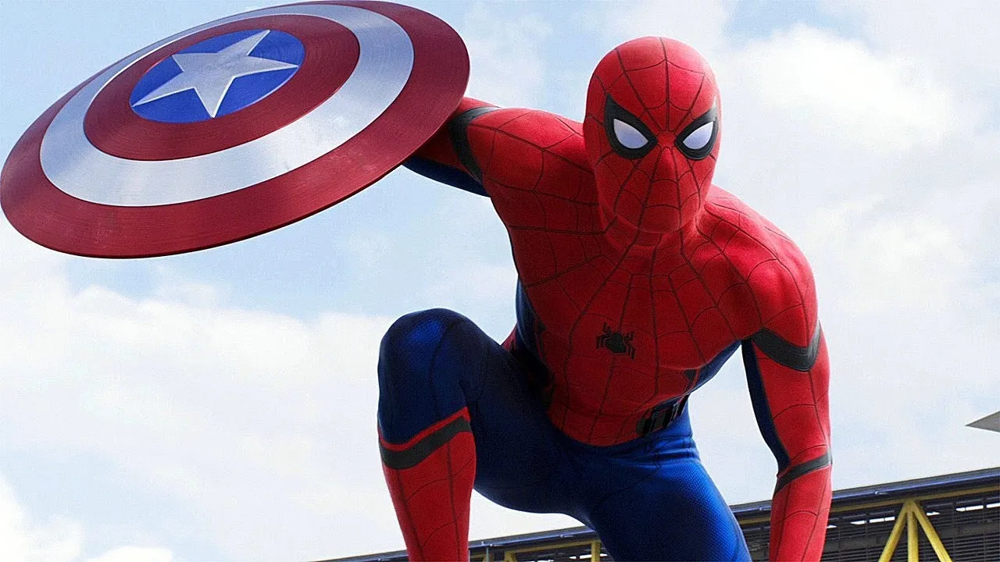
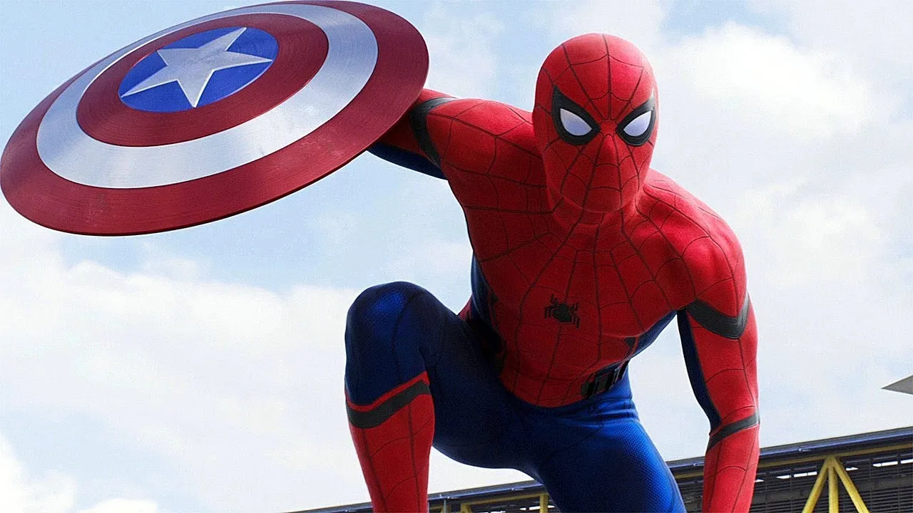

La guerra contra Ultrón es un momento complicado en la tierra y para la historia de los vengadores, y justo aquí es donde comienza la fase 3 del UCM.
Con un equipo totalmente separado, comienzan a llegar nuevos integrantes a toda esta historia, como Stephen Strange, Black Panter o Peter Parker.
Más tarde, todos tendrán que volver a unirse para luchar contra un gran enemigo en común. Un enemigo que amenaza, y parece que será el que más cerca está de hacerlo, a la vida tal y como la conocen en el Universo.
En esta fase podemos observar como todos pelean, se separan, huyen o se pierden de si mismos.A su vez, nos dejan una enseñanza y es que unidos somos mas fuertes y sin importar las diferencias todos somos un equipo.
| PELICULA | TRAILER | FECHA |
|---|---|---|
| Captain America: Civil War | Parker | 2016 |
| Doctor Strange | Stephen | 2016 |
| Guardians Of The Galaxy Vol.2 | Groot | 2017 |
| Spider-Man:Homecoming | Peter and Tony | 2017 |
| Thor: Ragnarok | Valkirya | 2017 |
| Black Panter | T'challa | 2018 | Ant-Man And The Wasp | Hope | 2018 |
| Avengers: Infinity War | Gemas | 2018 |
| Avengers: Endgame | Thanos | 2019 |
| Captain Marvel | Carol | 2019 |
| Spider-Man: Far From Home | Mysterio | 2019 |
 
